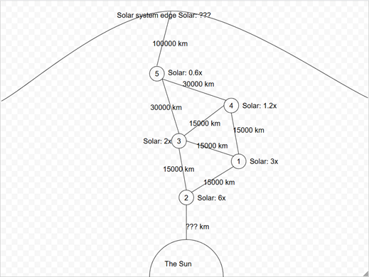

The 5 Planets and Their Sun

Important: The diagram is NOT drawn to scale
- Find the relative distances of each planet to the sun, relative to planet 1 using the provided solar values. Assume that the universe is 3d.
- Find the absolute distances of each planet to the sun, to the nearest kilometer. You will need to use trigonometry to solve this one.
- Using your answers from part 2, find the distance from the sun to the solar system edge, or in other words the size of the solar system.